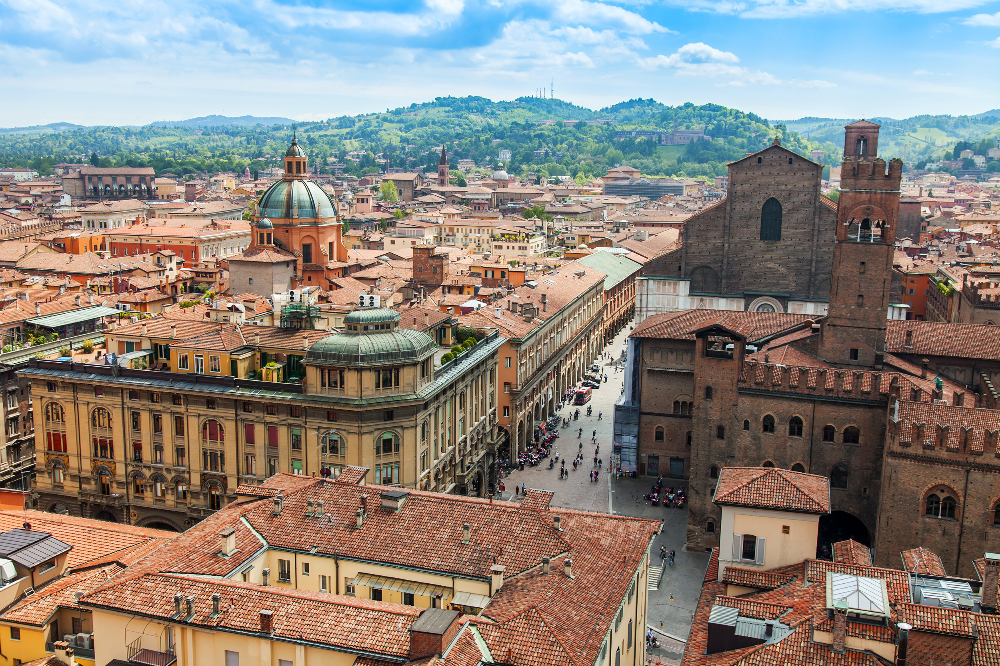
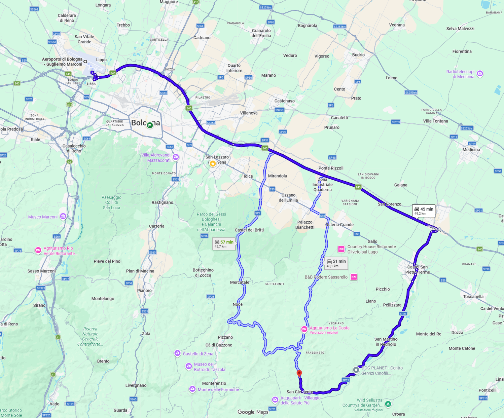
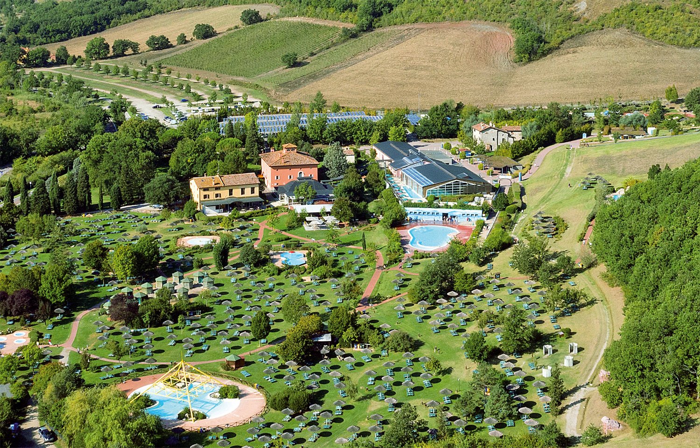
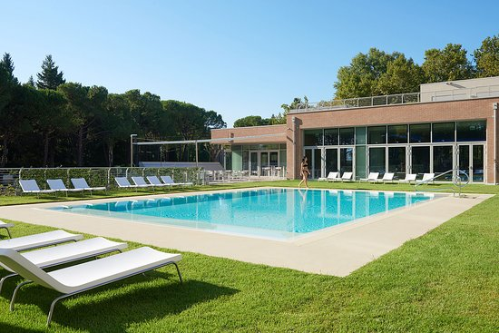
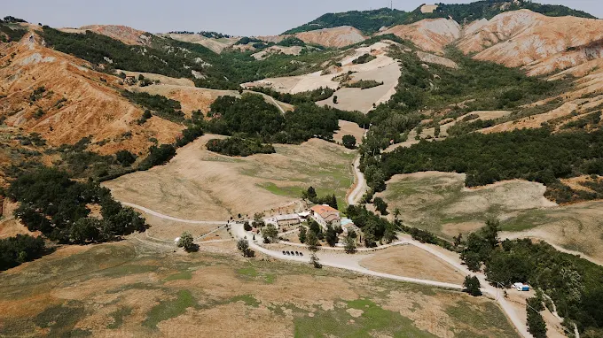
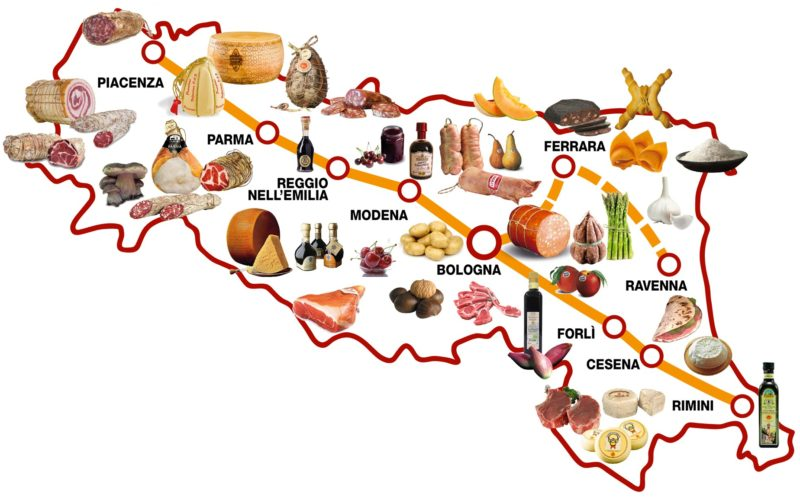

Come Arrivare al Podere.

Spostarsi.

Intro Strutture.
Informazioni sul Villaggio della Salute Più.

Informazioni su Anusca Palace Hotel.

Consigli su abbigliamento e calzature.

Consigli per scoprire Bologna e l’Emilia-Romagna prima del matrimonio.
